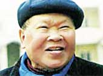

Nhà thơ Huy Cận
(1919-2005)
Lòng quê dờn dợn vời con nước, Không khói hoàng hôn cũng nhớ nhà...
Tên thật Cù Huy Cận, sinh ngày 31 tháng 5 năm 1919, quê làng Ân Phú huyện Hương Sơn, tỉnh Hà Tĩnh; cha là một nhà nho.
Đậu tú tài Tây ở Huế, sau đó theo học ở trường Cao Đẳng Canh Nông, ở phố Hàng Than cùng với Xuân Diệu. Năm 1943 ông đậu kỹ sư canh nông.
Từ năm 1945 đến nay là Thứ trưởng rồi hàm Bộ trưởng, phụ trách các công tác văn hóa và văn nghệ.
Làm thơ từ 1934, đăng thơ từ năm 1936. Tác phẩm tiêu biểu gồm có các tập thơ Lửa Thiêng (1940), Kinh Cầu Tự (1942), Vũ Trụ Ca (chưa in, 1942-43), Trời Mỗi Ngày Lại Sáng (1958), Đất Nở Hoa (1960), Bài Thơ Cuộc Đời (1963), Những Năm Sáu Mươi (1968), Cô Gái Mèo (1972), Chiến Trường Gần Chiến Trường Xa (1973), Ngày Hằng Sống Ngày Hằng Thơ (1975), Ngôi Nhà Giữa Nắng (1978).
Là một trong những nhà thơ xuất sắc nhất của phong trào Thơ Mới, thơ ông có một bản sắc và giọng điệu riêng, có chiều sâu xã hội cũng như triết lý. Thơ Huy Cận mang một nỗi buồn sâu lắng, miên man, ảo não và thảm đạm; nỗi buồn của "đêm mưa", của "người lữ thứ", nỗi buồn của "quán chật đèo cao", của "trời rộng sông dài".
Ông mất ngày 19/2/2005 tại Hà Nội.